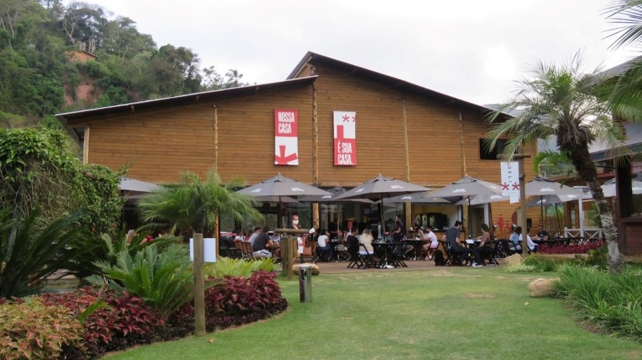
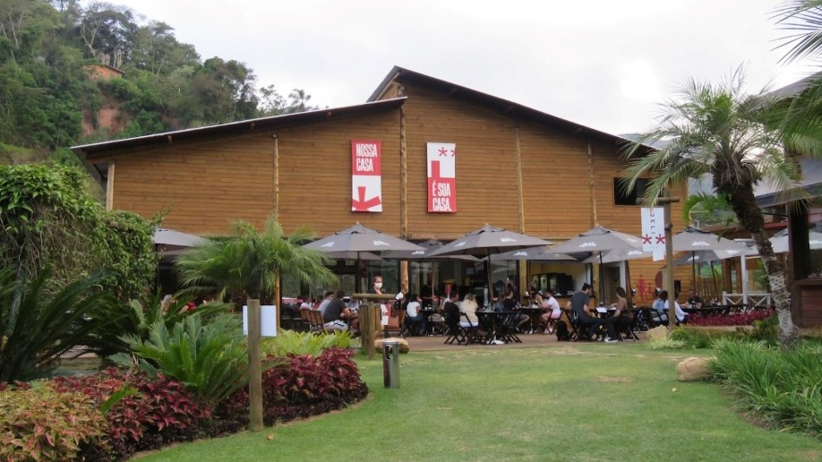

A Casa Brüder busca resgatar a verdadeira culinária alemã. Venha conhecer o real significado da palavra sabor.
Em setembro de 2021, Petrópolis recebeu um cantinho alemão. Aqui você encontrará um cardápio versátil pronto para lhe atender a qualquer hora do dia. Também garantimos um atendimento exepcional, e muita diversão para você e sua família (e com família, estamos incluíndo seu pet nessa).
 

Nossa equipe deixa um toque especial em cada prato. Você poderá se deliciar com nossos drinks artesanais e levar um pouquinho dessa felicidade para casa com nossos pães e nossas delicatéssen's.
Não importa o que você busca, seja um almoço em família, um encontro romântico ou até mesmo um rolê para beber com amigos, aqui você encontrará o que precisa e faremos o seu dia mais especial. E casa queira levar um pouquinho do nosso gostinho de felicidade, você pode, com nossas delicatéssen's.
Fundada em setembro de 2021, por Kenny e Brayan Pavelka, filhos do empresário Thomas Pavelka, dono da Lanchonete Pavelka. A Casa Brüder busca seguir o mesmo caminho da Lanchonete Pavelka, e assim expandir o legado da família na cidade. Garantimos experiências incriveis a cada visita.